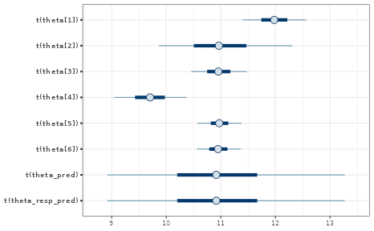
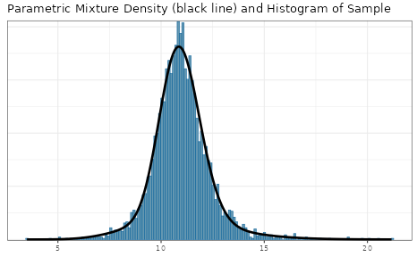
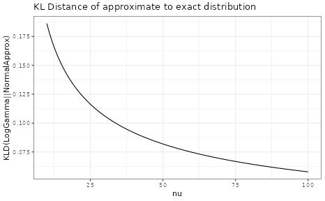
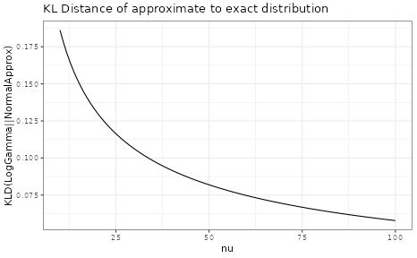

Meta-Analytic-Predictive Priors for Variances
Sebastian Weber
2025-01-21
Source:vignettes/articles/variances_MAP.Rmd
variances_MAP.RmdApplying the meta-analytic-predictive (MAP) prior approach to historical data on variances has been suggested in [1]. The utility is a better informed planning of future trials which use a normal endpoint. For these reliable information on the sampling standard deviation is crucial for planning the trial.
Under a normal sampling distribution the (standard) unbiased variance estimator for a sample of size is
which follows a distribution with degrees of freedom. The can be rewritten as a distribution
where is the (unknown) sampling standard deviation for the data .
While this is not directly supported in RBesT, a normal
approximation of the
transformed
variate can be applied. When
transforming a
variate it’s moment and variance can analytically be shown to be (see
[2], for example)
Here, is the digamma function and is the polygamma function of order 1 (second derivative of the of the function).
Thus, by approximating the
transformed
distribution with a normal approximation, we can apply gMAP
as if we were using a normal endpoint. Specifically, we apply the
transform
such that
the meta-analytic model directly considers
as random variate. The normal approximation becomes more accurate, the
larger the degrees of freedom are. The section at the bottom of this
vignette discusses this approximation accuracy and concludes that
independent of the true
value for 10 observations the approxmation is useful and a very good one
for more than 20 observations.
In the following we reanalyze the main example of reference [1] which is shown in table 2:
| study | sd | df |
|---|---|---|
| 1 | 12.11 | 597 |
| 2 | 10.97 | 60 |
| 3 | 10.94 | 548 |
| 4 | 9.41 | 307 |
| 5 | 10.97 | 906 |
| 6 | 10.95 | 903 |
Using the above equations (and using plug-in estimates for ) this translates into an approximate normal distribution for the variance as:
hdata <- mutate(hdata,
alpha = df / 2,
beta = alpha / sd^2,
logvar_mean = log(sd^2 * alpha) - digamma(alpha),
logvar_var = psigamma(alpha, 1)
)| study | sd | df | alpha | beta | logvar_mean | logvar_var |
|---|---|---|---|---|---|---|
| 1 | 12.11 | 597 | 298.5 | 2.0354 | 4.9897 | 0.0034 |
| 2 | 10.97 | 60 | 30.0 | 0.2493 | 4.8071 | 0.0339 |
| 3 | 10.94 | 548 | 274.0 | 2.2894 | 4.7867 | 0.0037 |
| 4 | 9.41 | 307 | 153.5 | 1.7335 | 4.4868 | 0.0065 |
| 5 | 10.97 | 906 | 453.0 | 3.7643 | 4.7914 | 0.0022 |
| 6 | 10.95 | 903 | 451.5 | 3.7656 | 4.7878 | 0.0022 |
In order to run the MAP analysis a prior for the heterogeniety
parameter
and the intercept
is needed. In reference [3] it is demonstrated that the (approximate)
sampling standard deviation of the
variance is
.
Thus, a HalfNormal(0,sqrt(2)/2) is a very conservative
choice for the between-study heterogeniety parameter. A less
conservative choice is HalfNormal(0,sqrt(2)/4), which gives
very similar results in this case. For the intercept
a very wide prior is used with a standard deviation of
which is in line with reference [1]:
map_mc <- gMAP(cbind(logvar_mean, sqrt(logvar_var)) ~ 1 | study,
data = hdata,
tau.dist = "HalfNormal", tau.prior = sqrt(2) / 2,
beta.prior = cbind(4.8, 100)
)
map_mc## Generalized Meta Analytic Predictive Prior Analysis
##
## Call: gMAP(formula = cbind(logvar_mean, sqrt(logvar_var)) ~ 1 | study,
## data = hdata, tau.dist = "HalfNormal", tau.prior = sqrt(2)/2,
## beta.prior = cbind(4.8, 100))
##
## Exchangeability tau strata: 1
## Prediction tau stratum : 1
## Maximal Rhat : 1
##
## Between-trial heterogeneity of tau prediction stratum
## mean sd 2.5% 50% 97.5%
## 0.2050 0.1040 0.0781 0.1830 0.4720
##
## MAP Prior MCMC sample
## mean sd 2.5% 50% 97.5%
## 4.780 0.256 4.240 4.780 5.270
summary(map_mc)## Heterogeneity parameter tau per stratum:
## mean sd 2.5% 50% 97.5%
## tau[1] 0.205 0.104 0.0781 0.183 0.472
##
## Regression coefficients:
## mean sd 2.5% 50% 97.5%
## (Intercept) 4.78 0.101 4.57 4.78 4.97
##
## Mean estimate MCMC sample:
## mean sd 2.5% 50% 97.5%
## theta_resp 4.78 0.101 4.57 4.78 4.97
##
## MAP Prior MCMC sample:
## mean sd 2.5% 50% 97.5%
## theta_resp_pred 4.78 0.256 4.24 4.78 5.27
plot(map_mc)$forest_model
In reference [1] the correct likelihood is used in contrast to the approximate normal approach above. Still, the results match very close, even for the outer quantiles.
MAP prior for the sampling standard deviation
While the MAP analysis is performed for the
variance, we are actually interested in the MAP of the respective
sampling standard deviation. Since the sampling standard deviation is a
strictly positive quantity it is suitable to approximate the MCMC
posterior of the MAP prior using a mixture of
variates, which can be done using RBesT as:
map_mc_post <- as.matrix(map_mc)
sd_trans <- compose(sqrt, exp)
mcmc_intervals(map_mc_post, regex_pars = "theta", transformation = sd_trans)
map_sigma_mc <- sd_trans(map_mc_post[, c("theta_pred")])
map_sigma <- automixfit(map_sigma_mc, type = "gamma")
plot(map_sigma)$mix
## 95% interval MAP for the sampling standard deviation
summary(map_sigma)## mean sd 2.5% 50.0% 97.5%
## 10.980236 1.401089 8.283373 10.921528 14.063679Normal approximation of a variate
For a variate , which is transformed, , we have by the law of transformations for univariate densities:
The first and second moment of is then
A short simulation demonstrates the above results:
gamma_dist <- mixgamma(c(1, 18, 6))
## logGamma density
dlogGamma <- function(z, a, b, log = FALSE) {
n <- exp(z)
if (!log) {
return(dgamma(n, a, b) * n)
} else {
return(dgamma(n, a, b, log = TRUE) + z)
}
}
a <- gamma_dist[2, 1]
b <- gamma_dist[3, 1]
m <- digamma(a) - log(b)
v <- psigamma(a, 1)
## compare simulated histogram of log transformed Gamma variates to
## analytic density and approximate normal
sim <- rmix(gamma_dist, 1E5)
mcmc_hist(data.frame(logGamma = log(sim)), freq = FALSE, binwidth = 0.1) +
overlay_function(fun = dlogGamma, args = list(a = a, b = b), aes(linetype = "LogGamma")) +
overlay_function(fun = dnorm, args = list(mean = m, sd = sqrt(v)), aes(linetype = "NormalApprox"))## Warning in stat_function(..., inherit.aes = FALSE): All aesthetics have length 1, but the data has 100000 rows.
## ℹ Please consider using `annotate()` or provide this layer with data containing
## a single row.
## All aesthetics have length 1, but the data has 100000 rows.
## ℹ Please consider using `annotate()` or provide this layer with data containing
## a single row.
We see that for only, the approximation with a normal density is reasonable. However, by comparing as a function of the %, % and % quantiles of the correct distribution with the respective approximate distribution we can assess the adequatness of the approximation. The respective R code is accessible via the vignette overview page while here the graphical result is presented for two different values:


 

Acknowledgements
Many thanks to Ping Chen and Simon Wandel for pointing out an issue with the transformation as used earlier in this vignette.
References
[1] Schmidli, H., et. al, Comp. Stat. and Data Analysis, 2017,
113:100-110
[2] https://en.wikipedia.org/wiki/Gamma_distribution#Logarithmic_expectation_and_variance
[3] Gelman A, et. al, Bayesian Data Analysis. Third edit., 2014.,
Chapter 4, p. 84
R Session Info
## R version 4.4.2 (2024-10-31)
## Platform: x86_64-pc-linux-gnu
## Running under: Ubuntu 24.04.1 LTS
##
## Matrix products: default
## BLAS: /usr/lib/x86_64-linux-gnu/openblas-pthread/libblas.so.3
## LAPACK: /usr/lib/x86_64-linux-gnu/openblas-pthread/libopenblasp-r0.3.26.so; LAPACK version 3.12.0
##
## locale:
## [1] LC_CTYPE=C.UTF-8 LC_NUMERIC=C LC_TIME=C.UTF-8
## [4] LC_COLLATE=C.UTF-8 LC_MONETARY=C.UTF-8 LC_MESSAGES=C.UTF-8
## [7] LC_PAPER=C.UTF-8 LC_NAME=C LC_ADDRESS=C
## [10] LC_TELEPHONE=C LC_MEASUREMENT=C.UTF-8 LC_IDENTIFICATION=C
##
## time zone: UTC
## tzcode source: system (glibc)
##
## attached base packages:
## [1] stats graphics grDevices utils datasets methods base
##
## other attached packages:
## [1] bayesplot_1.11.1 purrr_1.0.2 dplyr_1.1.4 ggplot2_3.5.1
## [5] knitr_1.49 RBesT_1.8-1
##
## loaded via a namespace (and not attached):
## [1] tensorA_0.36.2.1 sass_0.4.9 generics_0.1.3
## [4] stringi_1.8.4 digest_0.6.37 magrittr_2.0.3
## [7] evaluate_1.0.3 grid_4.4.2 mvtnorm_1.3-3
## [10] fastmap_1.2.0 plyr_1.8.9 jsonlite_1.8.9
## [13] pkgbuild_1.4.6 backports_1.5.0 Formula_1.2-5
## [16] gridExtra_2.3 QuickJSR_1.5.1 scales_1.3.0
## [19] codetools_0.2-20 textshaping_0.4.1 jquerylib_0.1.4
## [22] abind_1.4-8 cli_3.6.3 rlang_1.1.5
## [25] munsell_0.5.1 withr_3.0.2 cachem_1.1.0
## [28] yaml_2.3.10 StanHeaders_2.32.10 parallel_4.4.2
## [31] tools_4.4.2 rstan_2.32.6 inline_0.3.21
## [34] reshape2_1.4.4 rstantools_2.4.0 checkmate_2.3.2
## [37] colorspace_2.1-1 assertthat_0.2.1 posterior_1.6.0
## [40] vctrs_0.6.5 R6_2.5.1 matrixStats_1.5.0
## [43] stats4_4.4.2 lifecycle_1.0.4 stringr_1.5.1
## [46] fs_1.6.5 htmlwidgets_1.6.4 ragg_1.3.3
## [49] pkgconfig_2.0.3 desc_1.4.3 pkgdown_2.1.1
## [52] RcppParallel_5.1.9 pillar_1.10.1 bslib_0.8.0
## [55] gtable_0.3.6 loo_2.8.0 glue_1.8.0
## [58] Rcpp_1.0.14 systemfonts_1.2.0 xfun_0.50
## [61] tibble_3.2.1 tidyselect_1.2.1 farver_2.1.2
## [64] htmltools_0.5.8.1 labeling_0.4.3 rmarkdown_2.29
## [67] compiler_4.4.2 distributional_0.5.0